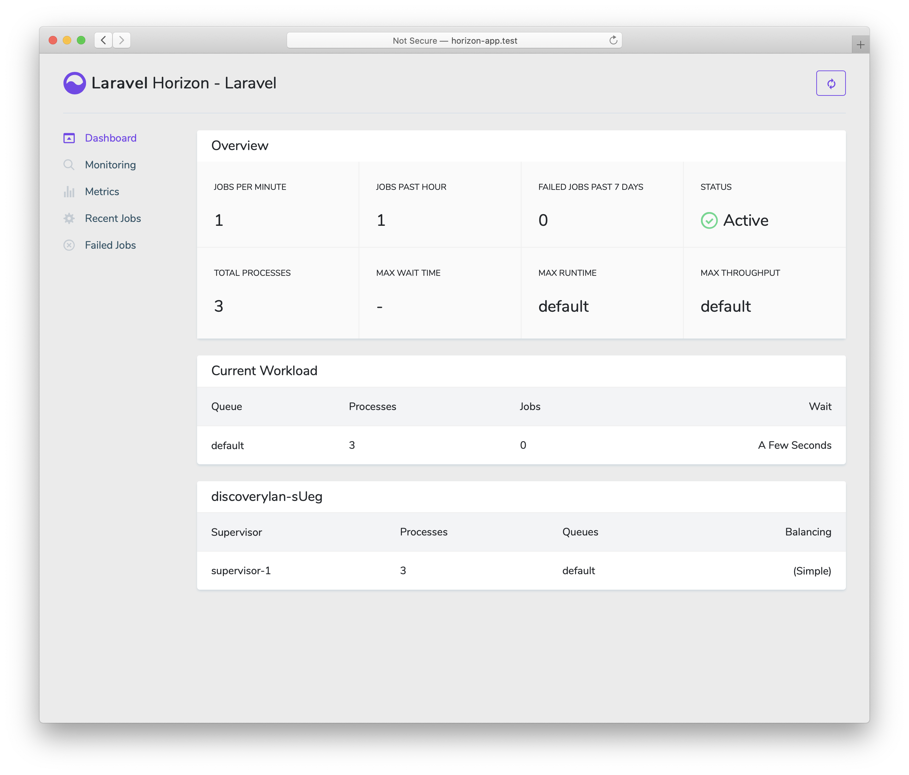

Laravel Horizon
- Introduction
- Installation
- Upgrading Horizon
- Running Horizon
- Tags
- Notifications
- Metrics
- Deleting Failed Jobs
- Clearing Jobs From Queues
Introduction
{tip} Before digging into Laravel Horizon, you should familiarize yourself with Laravel's base queue services. Horizon augments Laravel's queue with additional features that may be confusing if you are not already familiar with the basic queue features offered by Laravel.
Laravel Horizon provides a beautiful dashboard and code-driven configuration for your Laravel powered Redis queues. Horizon allows you to easily monitor key metrics of your queue system such as job throughput, runtime, and job failures.
When using Horizon, all of your queue worker configuration is stored in a single, simple configuration file. By defining your application's worker configuration in a version controlled file, you may easily scale or modify your application's queue workers when deploying your application.

Installation
{note} Laravel Horizon requires that you use Redis to power your queue. Therefore, you should ensure that your queue connection is set to
redisin your application'sconfig/queue.phpconfiguration file.
You may install Horizon into your project using the Composer package manager:
composer require laravel/horizonAfter installing Horizon, publish its assets using the horizon:install Artisan command:
php artisan horizon:installConfiguration
After publishing Horizon's assets, its primary configuration file will be located at config/horizon.php. This configuration file allows you to configure the queue worker options for your application. Each configuration option includes a description of its purpose, so be sure to thoroughly explore this file.
Environments
After installation, the primary Horizon configuration option that you should familiarize yourself with is the environments configuration option. This configuration option is an array of environments that your application runs on and defines the worker process options for each environment. By default, this entry contains a production and local environment. However, you are free to add more environments as needed:
'environments' => [
'production' => [
'supervisor-1' => [
'maxProcesses' => 10,
'balanceMaxShift' => 1,
'balanceCooldown' => 3,
],
],
'local' => [
'supervisor-1' => [
'maxProcesses' => 3,
],
],
],When you start Horizon, it will use the worker process configuration options for the environment that your application is running on. Typically, the environment is determined by the value of the APP_ENV environment variable. For example, the default local Horizon environment is configured to start three worker processes and automatically balance the number of worker processes assigned to each queue. The default production environment is configured to start a maximum of 10 worker processes and automatically balance the number of worker processes assigned to each queue.
{note} You should ensure that the
environmentsportion of yourhorizonconfiguration file contains an entry for each environment on which you plan to run Horizon.
Supervisors
As you can see in Horizon's default configuration file. Each environment can contain one or more "supervisors". By default, the configuration file defines this supervisor as supervisor-1; however, you are free to name your supervisors whatever you want. Each supervisor is essentially responsible for "supervising" a group of worker processes and takes care of balancing worker processes across queues.
You may add additional supervisors to a given environment if you would like to define a new group of worker processes that should run in that environment. You may choose to do this if you would like to define a different balancing strategy or worker process count for a given queue used by your application.
Default Values
Within Horizon's default configuration file, you will notice a defaults configuration option. This configuration option specifies the default values for your application's supervisors. The supervisor's default configuration values will be merged into the supervisor's configuration for each environment, allowing you to avoid unnecessary repetition when defining your supervisors.
Balancing Strategies
Unlike Laravel's default queue system, Horizon allows you to choose from three worker balancing strategies: simple, auto, and false. The simple strategy, which is the configuration file's default, splits incoming jobs evenly between worker processes:
'balance' => 'simple',The auto strategy adjusts the number of worker processes per queue based on the current workload of the queue. For example, if your notifications queue has 1,000 pending jobs while your render queue is empty, Horizon will allocate more workers to your notifications queue until the queue is empty.
When using the auto strategy, you may define the minProcesses and maxProcesses configuration options to control the minimum and maximum number of worker processes Horizon should scale up and down to:
'environments' => [
'production' => [
'supervisor-1' => [
'connection' => 'redis',
'queue' => ['default'],
'balance' => 'auto',
'minProcesses' => 1,
'maxProcesses' => 10,
'balanceMaxShift' => 1,
'balanceCooldown' => 3,
'tries' => 3,
],
],
],The balanceMaxShift and balanceCooldown configuration values to determine how quickly Horizon will scale to meet worker demand. In the example above, a maximum of one new process will be created or destroyed every three seconds. You are free to tweak these values as necessary based on your application's needs.
When the balance option is set to false, the default Laravel behavior will be used, which processes queues in the order they are listed in your configuration.
Dashboard Authorization
Horizon exposes a dashboard at the /horizon URI. By default, you will only be able to access this dashboard in the local environment. However, within your app/Providers/HorizonServiceProvider.php file, there is an authorization gate definition. This authorization gate controls access to Horizon in non-local environments. You are free to modify this gate as needed to restrict access to your Horizon installation:
/**
* Register the Horizon gate.
*
* This gate determines who can access Horizon in non-local environments.
*
* @return void
*/
protected function gate()
{
Gate::define('viewHorizon', function ($user) {
return in_array($user->email, [
'taylor@laravel.com',
]);
});
}Alternative Authentication Strategies
Remember that Laravel automatically injects the authenticated user into the gate closure. If your application is providing Horizon security via another method, such as IP restrictions, then your Horizon users may not need to "login". Therefore, you will need to change function ($user) closure signature above to function ($user = null) in order to force Laravel to not require authentication.
Upgrading Horizon
When upgrading to a new major version of Horizon, it's important that you carefully review the upgrade guide. In addition, when upgrading to any new Horizon version, you should re-publish Horizon's assets:
php artisan horizon:publishTo keep the assets up-to-date and avoid issues in future updates, you may add the horizon:publish command to the post-update-cmd scripts in your application's composer.json file:
{
"scripts": {
"post-update-cmd": [
"@php artisan horizon:publish --ansi"
]
}
}Running Horizon
Once you have configured your supervisors and workers in your application's config/horizon.php configuration file, you may start Horizon using the horizon Artisan command. This single command will start all of the configured worker processes for the current environment:
php artisan horizonYou may pause the Horizon process and instruct it to continue processing jobs using the horizon:pause and horizon:continue Artisan commands:
php artisan horizon:pause
php artisan horizon:continueYou may also pause and continue specific Horizon supervisors using the horizon:pause-supervisor and horizon:continue-supervisor Artisan commands:
php artisan horizon:pause-supervisor supervisor-1
php artisan horizon:continue-supervisor supervisor-1You may check the current status of the Horizon process using the horizon:status Artisan command:
php artisan horizon:statusYou may gracefully terminate the Horizon process using the horizon:terminate Artisan command. Any jobs that are currently being processed by will be completed and then Horizon will stop executing:
php artisan horizon:terminateDeploying Horizon
When you're ready to deploy Horizon to your application's actual server, you should configure a process monitor to monitor the php artisan horizon command and restart it if it exits unexpectedly. Don't worry, we'll discuss how to install a process monitor below.
During your application's deployment process, you should instruct the Horizon process to terminate so that it will be restarted by your process monitor and receive your code changes:
php artisan horizon:terminateInstalling Supervisor
Supervisor is a process monitor for the Linux operating system and will automatically restart your horizon process if it stops executing. To install Supervisor on Ubuntu, you may use the following command. If you are not using Ubuntu, you can likely install Supervisor using your operating system's package manager:
sudo apt-get install supervisor{tip} If configuring Supervisor yourself sounds overwhelming, consider using Laravel Forge, which will automatically install and configure Supervisor for your Laravel projects.
Supervisor Configuration
Supervisor configuration files are typically stored within your server's /etc/supervisor/conf.d directory. Within this directory, you may create any number of configuration files that instruct supervisor how your processes should be monitored. For example, let's create a horizon.conf file that starts and monitors a horizon process:
[program:horizon]
process_name=%(program_name)s
command=php /home/forge/example.com/artisan horizon
autostart=true
autorestart=true
user=forge
redirect_stderr=true
stdout_logfile=/home/forge/example.com/horizon.log
stopwaitsecs=3600{note} You should ensure that the value of
stopwaitsecsis greater than the number of seconds consumed by your longest running job. Otherwise, Supervisor may kill the job before it is finished processing.
Starting Supervisor
Once the configuration file has been created, you may update the Supervisor configuration and start the monitored processes using the following commands:
sudo supervisorctl reread
sudo supervisorctl update
sudo supervisorctl start horizon{tip} For more information on running Supervisor, consult the Supervisor documentation.
Tags
Horizon allows you to assign “tags” to jobs, including mailables, broadcast events, notifications, and queued event listeners. In fact, Horizon will intelligently and automatically tag most jobs depending on the Eloquent models that are attached to the job. For example, take a look at the following job:
<?php
namespace App\Jobs;
use App\Models\Video;
use Illuminate\Bus\Queueable;
use Illuminate\Contracts\Queue\ShouldQueue;
use Illuminate\Foundation\Bus\Dispatchable;
use Illuminate\Queue\InteractsWithQueue;
use Illuminate\Queue\SerializesModels;
class RenderVideo implements ShouldQueue
{
use Dispatchable, InteractsWithQueue, Queueable, SerializesModels;
/**
* The video instance.
*
* @var \App\Models\Video
*/
public $video;
/**
* Create a new job instance.
*
* @param \App\Models\Video $video
* @return void
*/
public function __construct(Video $video)
{
$this->video = $video;
}
/**
* Execute the job.
*
* @return void
*/
public function handle()
{
//
}
}If this job is queued with an App\Models\Video instance that has an id attribute of 1, it will automatically receive the tag App\Models\Video:1. This is because Horizon will search the job's properties for any Eloquent models. If Eloquent models are found, Horizon will intelligently tag the job using the model's class name and primary key:
use App\Jobs\RenderVideo;
use App\Models\Video;
$video = Video::find(1);
RenderVideo::dispatch($video);Manually Tagging Jobs
If you would like to manually define the tags for one of your queueable objects, you may define a tags method on the class:
class RenderVideo implements ShouldQueue
{
/**
* Get the tags that should be assigned to the job.
*
* @return array
*/
public function tags()
{
return ['render', 'video:'.$this->video->id];
}
}Notifications
{note} When configuring Horizon to send Slack or SMS notifications, you should review the prerequisites for the relevant notification channel.
If you would like to be notified when one of your queues has a long wait time, you may use the Horizon::routeMailNotificationsTo, Horizon::routeSlackNotificationsTo, and Horizon::routeSmsNotificationsTo methods. You may call these methods from the boot method of your application's App\Providers\HorizonServiceProvider:
/**
* Bootstrap any application services.
*
* @return void
*/
public function boot()
{
parent::boot();
Horizon::routeSmsNotificationsTo('15556667777');
Horizon::routeMailNotificationsTo('example@example.com');
Horizon::routeSlackNotificationsTo('slack-webhook-url', '#channel');
}Configuring Notification Wait Time Thresholds
You may configure how many seconds are considered a "long wait" within your application's config/horizon.php configuration file. The waits configuration option within this file allows you to control the long wait threshold for each connection / queue combination:
'waits' => [
'redis:default' => 60,
'redis:critical,high' => 90,
],Metrics
Horizon includes a metrics dashboard which provides information regarding your job and queue wait times and throughput. In order to populate this dashboard, you should configure Horizon's snapshot Artisan command to run every five minutes via your application's scheduler:
/**
* Define the application's command schedule.
*
* @param \Illuminate\Console\Scheduling\Schedule $schedule
* @return void
*/
protected function schedule(Schedule $schedule)
{
$schedule->command('horizon:snapshot')->everyFiveMinutes();
}Deleting Failed Jobs
If you would like to delete a failed job, you may use the horizon:forget command. The horizon:forget command accepts the ID of the failed job as its only argument:
php artisan horizon:forget 5Clearing Jobs From Queues
If you would like to delete all jobs from your application's default queue, you may do so using the horizon:clear Artisan command:
php artisan horizon:clearYou may provide the queue option to delete jobs from a specific queue:
php artisan horizon:clear --queue=emails